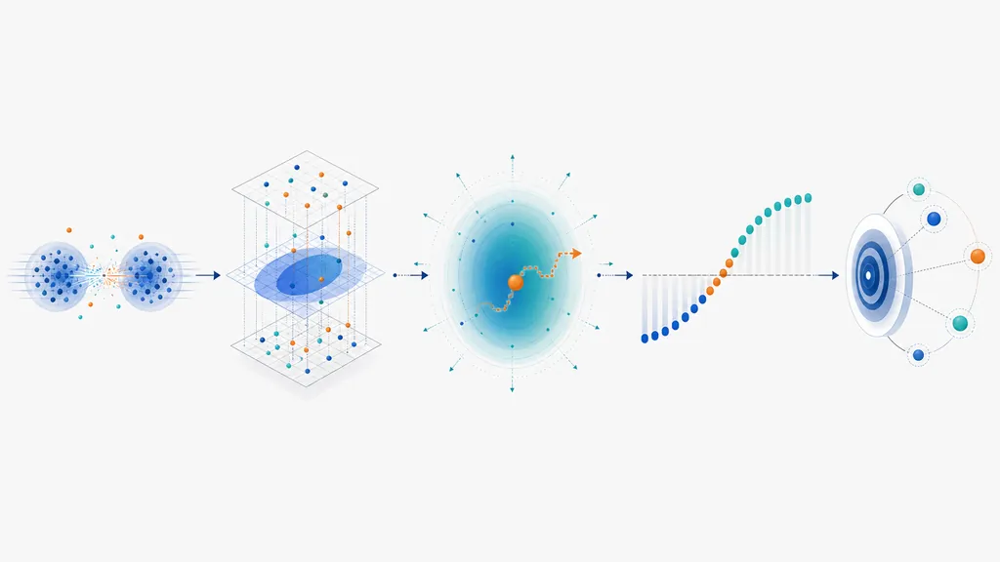
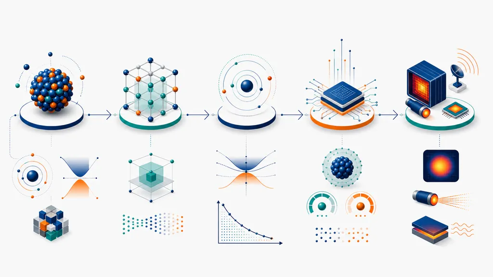
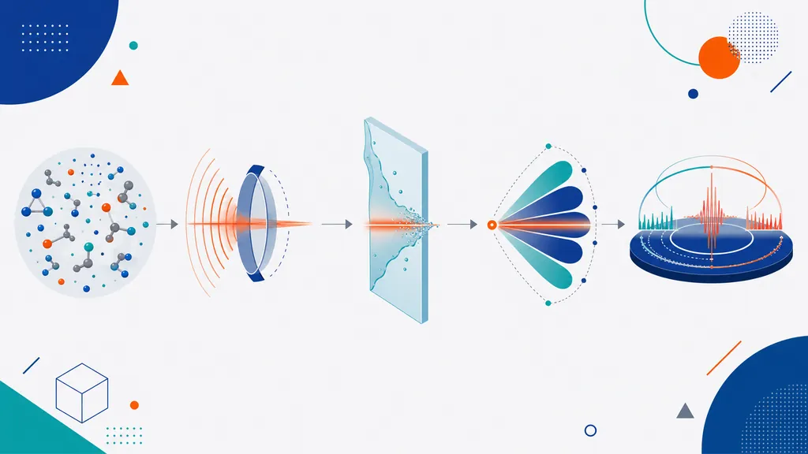

AI × Science 文献日报 2026/05/27
聚焦 AI × 物理 / 化学 / 材料交叉方向，自动过滤明显偏题的医学、教育与社会科学内容，并按主题重新排版，便于快速深读。
AI | 物理 | 化学 | 材料 | 交叉学科 | arXiv | 预印本追踪
原始候选 210 篇中，已剔除 0 篇明显偏离主线的内容，并从剩余 210 篇主线相关文献中精选 60 篇进入日报页，优先保留 AI × 物理 / 化学 / 材料交叉与关键计算方法工作。
📖 今日精读
Anyon Superfluidity of Excitons in Quantum Hall Bilayers
展开精读
Quantum-Enhanced Sensing Enabled by Scrambling-Induced Genuine Multipartite Entanglement
展开精读
Random Initial Data and Average Shock Time in the Fermi-Pasta-Ulam-Tsingou Chain

展开精读
Probing the Quark-Gluon Plasma through pT-Differential Radial Flow of Heavy Quarks

展开精读
Dynamical phase transitions and criticality-enhanced charging in a topological quantum battery
展开精读
Superfluidity in the spin-frac12 XY model with power-law interactions
展开精读
Exploring Chiral Exceptional Lines in the Visible Regime
展开精读
Unusual optoelectronic and topological properties of HgTe nanocrystals

展开精读
Thouless pumps and universal geometry-induced drift velocity in multisliding quasiperiodic lattices
展开精读
Electronic Origin of Delicate Antiferromagnetism in FeₓNbS₂
展开精读
Computational thermodynamics of ordered and disordered ZrC vacancy structures
展开精读
Quenching of the π0p₃/₂−π0p₁/₂ Spin-Orbit Splitting in ²⁰O and the Effect of the Tensor Force
展开精读
Effective Density Matrix for Vacua in Asymptotically Flat Gravity
展开精读
Quantum Trajectory Separation and Attosecond Mapping in Liquid High-Harmonic Generation

展开精读
Disorder induced time-reversal-odd nonlinear spin and orbital Hall effects
展开精读
Atiyah-Hirzebruch spectral sequence for topological insulators and superconductors: E₂ pages for 1651 magnetic space groups
展开精读
Electronic properties and formation pathways of the oxygen vacancy defect family in 4H-SiC: A first-principles study
展开精读
核心关注（ML × ferro / 凝聚态）
8 篇今天最贴近磁性凝聚态势能面的进展是 Fe-Pd：spin-MLIP 用软约束自旋极化 DFT 数据主动学习共线磁矩 MTP，把磁矩作为显式自由度并同时约束能量/力。PZT-5A 机臂压电采能与深度强化学习导航把铁电/压电材料模型接入系统级控制，层级不同于 BaTiO3 畴壁的 phase-field+PINN 或 NEP/MACE 原子势研究。其余工作集中在微结构表征、主动学习闭环和泛化理论；未直接给出 NbOI2、CrI3、CrSBr 的 DFT+U、equivariant GNN、MACE 或 NEP 新基准，但对磁性/铁电多尺度 ML 的数据生成、闭环采样和误差界有可迁移价值。
-
01用 spin-MLIP 主动学习 Fe-Pd 磁势Active learning of collinear magnetic Moment Tensor Potentials using the spin-MLIP package from soft-constrained spin-polarized DFT calculations: a case study of Fe-Pd
📄 摘要：面向 Fe-Pd，用软约束自旋极化 DFT 生成共线磁矩数据，结合 spin-MLIP 主动学习拟合磁性矩张量势，以显式磁自由度描述磁性材料能量与力。
💡 亮点：Fe-Pd 磁性 MTP 可由软约束自旋 DFT 主动学习构建。
📐 方法要点：软约束自旋DFT生成磁矩数据，主动学习共线磁MTP势。
🔗 相关工作关联：呼应磁性MLIP、spin-lattice动力学、DFT+U磁交换拟合方向。
💡 对你方向的启示：拟合势时应把磁矩当训练标签，主动采样磁构型而非只采样几何。
-
02压电采能与节能深度强化学习无人机Piezoelectric Energy Harvesting Coupled with Energy-Aware Deep Reinforcement Learning for Extended-Endurance Autonomous UAVs
📄 摘要：针对四旋翼 15–25 分钟续航瓶颈，建立 DJI F450 机臂 PZT-5A 压电采能的 Euler-Bernoulli 有限元模型，并耦合能量感知深度强化学习导航框架。
💡 亮点：PZT-5A 机臂采能与节能导航被联合用于延长无人机续航。
📐 方法要点：PZT-5A机臂有限元采能模型耦合能量感知DRL导航。
🔗 相关工作关联：呼应压电能量采集、机电耦合FEM、强化学习控制。
💡 对你方向的启示：铁电/压电ML可从材料性能预测延伸到器件-控制闭环优化。
-
03微结构感知深度学习预测冲击起爆Microstructure-Aware Deep Learning Bridges Atomistics to Macroscale for Shock-to-Detonation Prediction
📄 摘要：针对含能材料冲击到爆轰转变，构建微结构感知深度学习模型，连接埃到毫米、飞秒到微秒尺度，用于缺乏尺度分离时的跨尺度预测。
💡 亮点：微结构深度模型绕开尺度分离假设预测冲击起爆。
📐 方法要点：微结构特征深度模型连接原子模拟与宏观起爆判据。
🔗 相关工作关联：呼应多尺度学习、冲击物理、缺陷敏感反应材料建模。
💡 对你方向的启示：凝聚态跨尺度ML需显式编码孔洞、晶粒等微结构统计量。
-
04由二维高分辨电镜解锁三维纳米形貌Unlocking 3D nanoparticle shapes from 2D high-resolution transmission electron microscopy images: a deep learning approach
📄 摘要：利用深度学习从二维高分辨透射电镜图像反演纳米颗粒三维形状，面向传统二维投影难以确定空间构型的问题，实现显微图像到三维结构的映射。
💡 亮点：深度学习把二维高分辨电镜图像转化为三维纳米颗粒形貌。
📐 方法要点：深度网络由2D HRTEM投影反演纳米颗粒3D形貌。
🔗 相关工作关联：呼应电子显微重建、生成式逆问题、结构表征自动化。
💡 对你方向的启示：可将显微图像直接转成可供DFT/MLIP使用的三维结构先验。
-
05分布式量子架构的尺寸无关强化学习SQARL: A Size-Agnostic Reinforcement Learning approach for Circuit Allocation in Distributed Quantum Architectures
📄 摘要：SQARL 用尺寸无关强化学习处理分布式量子计算中的电路分配，在量子比特增多导致退相干与串扰增强时，为多处理器量子架构分配计算资源。
💡 亮点：SQARL 将量子电路分配策略泛化到不同规模分布式架构。
📐 方法要点：尺寸无关RL将量子线路分配到分布式量子处理器。
🔗 相关工作关联：呼应量子编译、图强化学习、噪声感知资源调度。
💡 对你方向的启示：凝聚态量子模拟工作流可借鉴尺寸泛化的调度策略。
-
06白板主动学习自主发现材料Autonomous materials discovery through a tabula rasa active learning framework
📄 摘要：面向高维多元合金电催化剂的组合爆炸，提出从白板状态出发的主动学习框架，减少对试错和先验经验的依赖，用闭环搜索化学空间。
💡 亮点：白板主动学习用于高维多元合金电催化剂搜索。
📐 方法要点：tabula rasa主动学习闭环搜索多元合金电催化空间。
🔗 相关工作关联：呼应贝叶斯优化、组合材料发现、高熵合金筛选。
💡 对你方向的启示：少先验场景可从空白初始化，用实验反馈快速收缩候选空间。
-
07极小曲面、纽结与神经网络Minimal surfaces, Knots, and Neural Networks
📄 摘要：围绕 Fine 猜想，探讨 S³ 中纽结的 HOMFLY 多项式系数与 H⁴ 中以该纽结为无穷边界的极小曲面带符号计数之间的关系，并引入神经网络辅助研究。
💡 亮点：神经网络被用于探索纽结多项式与双曲极小曲面的联系。
📐 方法要点：用神经网络关联纽结HOMFLY系数与极小曲面计数。
🔗 相关工作关联：呼应数学物理ML、拓扑不变量学习、几何深度学习。
💡 对你方向的启示：拓扑特征学习可迁移到磁斯格明子、畴壁和缺陷分类。
-
08物理知情机器学习泛化的 PAC-贝叶斯视角A PAC-Bayesian View of Generalisation for Physics-Informed Machine Learning
📄 摘要：从 PAC-贝叶斯理论分析物理知情机器学习的泛化性质，把偏微分方程约束纳入统计学习框架，解释其在数据驱动模型中的误差控制问题。
💡 亮点：PAC-贝叶斯框架给出物理知情模型泛化分析。
📐 方法要点：PAC-贝叶斯框架刻画PDE约束物理知情ML泛化误差。
🔗 相关工作关联：呼应PINN泛化理论、物理正则化、统计学习界。
💡 对你方向的启示：用PINN拟合相场或磁动力学时需报告先验、后验和残差界。
今日摘要
总览：今日条目集中在自旋相关材料、量子多体与机器学习加速建模：铁-钯共线磁矩张量势以软约束自旋极化密度泛函数据做主动学习，铬基二元超合金用深度学习热力学代理模型筛选，二维高分辨透射电镜图像反演三维纳米颗粒形貌。实验物理侧覆盖面内铁磁笼目金属的复杂电子地形与磁输运、应变铁碲薄膜的磁序—超导可逆调控、钼硅超导纳米线单光子探测器化学计量优化，以及钽/钨磁隧道结中的轨道力矩和自旋轨道力矩竞争。量子凝聚态主题包括反常霍尔替代磁体、强易轴三角晶格量子磁体自旋波、韦尔半金属反常诱导体电磁模、分数量子陈绝缘体量子几何、四元数超导与四电子电荷序。
热点：热点一：机器学习势与自治发现 → 用主动学习、软约束自旋极化密度泛函、深度热力学代理模型和显微图像反演把原子尺度数据接到相图、冲击起爆和纳米形貌 → 典型工作是铁-钯磁矩张量势、无先验主动学习材料发现、铬基超合金热力学代理模型、二维透射电镜到三维纳米颗粒重构。热点二：自旋电子学与非常规磁序 → 从真实空间识别替代磁体、偏压工程合成反铁磁体室温零场亚二十纳米斯格明子、矢量时间分辨软射线重构磁振子本征函数，到铁铌硫和铁碲中化学计量控制磁性与超导 → 典型工作对应替代磁晶体设计、笼目铁磁金属磁输运、铁铌硫反铁磁电子起源、应变铁碲薄膜。热点三：量子多体算法与受控量子动力学 → 张量网络、有限温度兰索斯图形处理器加速、神经自回归控制变分和百量子比特热态制备用于处理符号问题、挫折磁体热化、监测自旋链和开放量子系统控制 → 典型工作是分数量子陈绝缘体量子几何无监督学习、一百三十九量子比特挫折自旋热态制备、量子蒙特卡洛符号问题神经控制变分、监测自旋链弹道—扩散转变。
交叉重点
-
01Active learning of collinear magnetic Moment Tensor Potentials using the spin-MLIP package from soft-constrained spin-polarized DFT calculations: a case study of Fe-Pd#
📄 摘要：面向 Fe-Pd，用软约束自旋极化 DFT 生成共线磁矩数据，结合 spin-MLIP 主动学习拟合磁性矩张量势，以显式磁自由度描述磁性材料能量与力。
💡 亮点：Fe-Pd 磁性 MTP 可由软约束自旋 DFT 主动学习构建。
关注理由：AI相关度 6
查看原文 ↗ -
02
📄 摘要：研究面内铁磁 kagome 金属的复杂电子结构与磁输运，聚焦 RMn6Sn6 类材料中平带、Dirac 锥和磁性的耦合，以及由此产生的输运响应。
💡 亮点：面内铁磁 kagome 金属中平带、Dirac 锥与磁输运强耦合。
关注理由：AI相关度 6
查看原文 ↗ -
03
📄 摘要：在单层亚铁磁尖晶石氧化物中，以自旋转移力矩驱动 Bloch 型畴壁，速度超过 1 km/s，展示高迁移率惯性畴壁运动。
💡 亮点：单层尖晶石氧化物畴壁速度超过 1 km/s。
关注理由：尖晶石畴壁速度超 1 km/s
查看原文 ↗ -
04
📄 摘要：提出在实空间识别交替磁体的方案，用于零净磁化但存在交换驱动自旋劈裂的共线反铁磁体，避免完全依赖磁空间群或自旋群分析。
💡 亮点：交替磁体可通过实空间规则从共线反铁磁体中筛选。
关注理由：实空间规则筛选交替磁体
查看原文 ↗ -
05
📄 摘要：在 139 量子比特平台上研究受挫强关联自旋体系的有限温热态制备，面向经典 QMC 难以处理的有限温性质。
💡 亮点：139 量子比特用于受挫自旋体系热态制备。
关注理由：139 量子比特制备受挫热态
查看原文 ↗ -
06
📄 摘要：训练一对自回归模型构造零均值控制变量，分别限制在正号与负号扇区且支撑互不重叠，用于缓解量子蒙特卡洛模拟中的符号问题。
💡 亮点：正负号分区自回归控制变量缓解量子蒙特卡洛符号问题。
关注理由：自回归控制变量缓解符号问题
查看原文 ↗
完整速览
-
01
📄 摘要：SQARL 用尺寸无关强化学习处理分布式量子计算中的电路分配，在量子比特增多导致退相干与串扰增强时，为多处理器量子架构分配计算资源。
💡 亮点：SQARL 将量子电路分配策略泛化到不同规模分布式架构。
-
02
📄 摘要：构建多任务 SAC 强化学习框架，面向不同开放系统哈密顿量学习最优脉冲序列，同时自动寻找问题相关的演化时间，实现时域优化控制。
💡 亮点：多任务 SAC 同时优化量子控制脉冲与演化时间。
-
03
📄 摘要：针对量子比特丢失破坏稳定子码代数结构的问题，提出人工智能辅助解码方案，用于在丢失错误场景下恢复量子纠错码的判错与校正能力。
💡 亮点：AI 解码器处理稳定子码中量子比特丢失错误。
-
04
📄 摘要：对深度互锁 Hopf 链量子环中两个相互作用电子做精确对角化，保留未展开三维库仑相互作用，确定双体纠缠边界与连续空间对称性。
💡 亮点：Hopf 链几何通过连续对称性约束电子纠缠。
-
05
📄 摘要：研究超导 MoSi 薄膜化学计量与 SNSPD 性能的关系，比较临界温度等薄膜参数对纳米线单光子探测灵敏度的影响。
💡 亮点：MoSi 配比直接调节 SNSPD 薄膜参数与灵敏度。
-
06
📄 摘要：研究 Ta/W 基磁隧道结的垂直非局域翻转，分析轨道力矩与自旋轨道力矩的相互作用，以改善 SOT-MRAM 写入效率受限问题。
💡 亮点：Ta/W 叠层中轨道力矩参与垂直非局域翻转。
-
07
📄 摘要：预言 Weyl 半金属中的新型体电磁集体模，来源于手征反常与相关手征取向的耦合，可作为该量子物质的电磁响应指纹。
💡 亮点：手征反常可生成此前未识别的体电磁混合模。
-
08
📄 摘要：考察具有有限可逆或非可逆对称的一维量子晶格模型，分析弦算符在给定有能隙相中获得非零期望值所需的代数条件。
💡 亮点：用代数条件刻画一维对称相的弦序参量。
-
09
📄 摘要：对最近邻三角 XXZ 模型在强易轴各向异性 Jxy/Jzz≪1 下进行 1/S 展开，分析非线性自旋波谱，回应相关实验中的低能激发问题。
💡 亮点：强易轴三角 XXZ 模型的谱由 1/S 非线性自旋波解析。
-
10
📄 摘要：低维超导体和超流体中残余电阻由序参量拓扑涨落导致，表现为一维相滑移；该机制使电阻不再按普通导体随截面积增大而单调降低。
💡 亮点：相滑移使低维超流出现反常残余电阻。
-
11
📄 摘要：研究一维光子晶格中周期驱动离散步量子行走的噪声动力学；Floquet 周期内恒定的时间噪声在体内产生无退相干动量子空间。
💡 亮点：周期内相关噪声反而保护特定动量子空间。
-
12
📄 摘要：研究相干驱动 Rydberg 原子阵列的一维受限量子自旋链，含局域 Rabi 驱动与偶极交换竞争；投影到阻塞子空间后分析零温相图、量子临界性与因子化条件。
💡 亮点：Rydberg 阻塞自旋链呈现竞争驱动下的临界与因子化。
-
13
📄 摘要：将自旋超导重写为四元数字段 q(k)，把自旋单态与三态能隙纳入四分量超复数；该形式统一描述自旋配对、拓扑结构与电荷 4e 有序。
💡 亮点：四元数字段统一编码自旋超导的配对与拓扑。
-
14
📄 摘要：从巨势对均匀磁场导数的热力学定义出发，处理均匀磁场导致动量算符不对易和 Landau 量子化的问题，并与周期磁场表述联系。
💡 亮点：统一讨论均匀场与周期场下轨道磁化定义。
-
15
📄 摘要：研究一维自旋系统中定义在有限 Abel 群对称子代数上的量子元胞自动机，针对每个位点携带对称表示的情形分析其结构。
💡 亮点：量子元胞自动机可限制在对称局域算符子代数上。
-
16
📄 摘要：将持续同调用于 ORBIS 罗马世界地理网络，分析公元 0–400 年东地中海加权交通系统的结构韧性和贸易网络拓扑变化。
💡 亮点：持续同调量化罗马东地中海贸易网络韧性。
-
17
📄 摘要：用自旋旋转不变 Kotliar-Ruckenstein 奴玻色子方法研究单带 Hubbard 模型超导；从重整化平均场基态构造有效配对理论，刻画强耦合配对产生。
💡 亮点：奴玻色子重整化框架用于强耦合 Hubbard 超导配对。
-
18
📄 摘要：在扭曲莫尔范德华异质结构中考察全局相干电荷密度波能否被纳米尺度连续操控，利用涡旋莫尔超晶格调制相关电子有序。
💡 亮点：涡旋莫尔超晶格可调制相干电荷密度波。
-
19
📄 摘要：研究由有向渗流产生的量子态中纠缠结构的转变，讨论不同纠缠图案类别之间的临界现象，超出稳定平衡量子相的传统框架。
💡 亮点：有向渗流量子态展现纠缠图案类别间相变。
-
20
📄 摘要：综述 R2Ir2O7 烧绿石铱酸盐薄膜进展，围绕强自旋轨道耦合、电子关联与几何阻挫的耦合，讨论薄膜中外延设计量子态的路径。
💡 亮点：R2Ir2O7 薄膜成为设计关联拓扑态的平台。
-
21
📄 摘要：研究四量子点环与环弦结构连接铁磁电极的光子辅助热电输运，分析微波 Floquet 旁带与几何 Fano 干涉对自旋热性能的增强。
💡 亮点：Floquet 旁带与 Fano 干涉增强量子点自旋热电。
-
22
📄 摘要：面向超薄宽禁带 GaN，讨论电场下缺陷调控对电子、磁性与气体传感功能的影响，聚焦器件缩放后的稳定性与可调性。
💡 亮点：电场缺陷工程用于调控超薄 GaN 多功能性质。
-
23
📄 摘要：构建二维电子流体流体力学区的 Schwinger-Keldysh 有效理论，从洁净固定点加入随机摩擦无序，求量子干涉磁阻修正。
💡 亮点：流体电子中的 Cooperon 可由 Schwinger-Keldysh 理论导出。
-
24
📄 摘要：研究周期监测的自旋 1/2 XXZ 链，发现两个测量诱导相变：稳态纠缠相变，以及无需后选择的自旋输运弹道-扩散转变。
💡 亮点：周期监测 XXZ 链出现无后选择输运相变。
-
25
📄 摘要：在掺杂到范霍夫奇点的单层石墨烯中发现稳健四面体磁基态；该非共面有隙自旋构型含四个等倾角磁矩，并处于多种竞争磁相之中。
💡 亮点：范霍夫掺杂石墨烯稳定非共面四面体磁序。
-
26
📄 摘要：用太赫兹发射谱探测 Co|Pt 异质结构的超快自旋输运，通过调节插层厚度控制界面粗糙度，分析粗糙界面对太赫兹自旋流透射的影响。
💡 亮点：太赫兹发射谱直接评估 Co|Pt 粗糙界面自旋透明性。
-
27
📄 摘要：提出无自旋晶格振动中的结构性另类声子学：晶体对称性可在无净磁化和无自旋条件下组织动量空间内部极化，形成亚晶格-动量锁定。
💡 亮点：晶格振动也可由对称性产生动量依赖内部极化。
-
28
📄 摘要：实现面向工作站 GPU 的有限温 Lanczos 方法，针对 Heisenberg 自旋哈密顿量采用逐行矩阵无关作用，避免依赖分布式内存集群。
💡 亮点：工作站 GPU 可执行自旋模型有限温 Lanczos 计算。
-
29
📄 摘要：以外磁场下富勒烯化合物为模型，理论研究超导态声子角动量；外场注入的电子轨道角动量可转移给声子，并在超导中得到增强。
💡 亮点：超导态可放大由电子轨道角动量诱导的声子角动量。
-
30
📄 摘要：用张量网络精确处理输运诱导的量子机电自持振荡；静态电化学偏压可在无外部周期驱动下转化为稳健自主振荡运动。
💡 亮点：张量网络刻画偏压驱动的量子机电自持振荡。
-
31
📄 摘要：考察能量-时间纠缠光驱动纳米晶量子点的双激子产生；光源来自参量下转换，可在经典多光子吸收限制之外调控双激子选择性。
💡 亮点：能量-时间纠缠光可选择性增强量子点双激子吸收。
-
32
📄 摘要：扩展量子多体体系中算符平移规范不变性的统计力学理论；用平移超算符实现规范变换，并讨论超密度泛函与非平衡求和规则。
💡 亮点：算符平移给出量子多体规范不变性的统一表述。
-
33
📄 摘要：仅通过开放量子系统能量测量识别非马尔可夫演化；证明 CP 可分性破缺总由能量变化分布中的非正值见证。
💡 亮点：能量变化分布负值可判定 CP 可分性破缺。
-
34
📄 摘要：系统研究致密钾碳化物相稳定性、几何基元与物性，关注高压下电子化物态及其与超导的关联，补足金属碳化物相图认识。
💡 亮点：高压钾碳化物中电子化物态与超导相互关联。
-
35
📄 摘要：围绕 FeₓNbS₂ 中脆弱反铁磁性的电子起源，结合电子结构与磁序分析，讨论 Fe 含量相关体系中反铁磁态为何对微观电子结构敏感。
💡 亮点：FeₓNbS₂ 的反铁磁性被追溯到精细电子结构。
-
36
📄 摘要：发展时间分辨 X 射线磁矢量计时技术，重构磁性材料完整自旋动力学，直接获得磁振子本征函数，并揭示隐藏的非厄米耦合机制。
💡 亮点：时间分辨 X 射线直接重构磁振子本征函数。
-
37
📄 摘要：通过偏置工程设计合成反铁磁体，在室温零磁场下容纳亚 20 nm 斯格明子，目标是兼顾小尺寸、自补偿磁性与无需外场稳定。
💡 亮点：合成反铁磁体实现室温零场亚 20 nm 斯格明子。
-
38
📄 摘要：构筑手性 Dion-Jacobson 型银/锑基双钙钛矿铁电体，实现 n 型 X 射线探测，并突出超低剂量工作能力与铁电结构的耦合。
💡 亮点：手性 Ag/Sb 双钙钛矿铁电体用于超低剂量 n 型 X 射线探测。
-
39
📄 摘要：面向分数量子陈绝缘体，采用无监督学习建立量子几何模型，用数据驱动方式捕捉能带几何特征与分数量子陈相稳定性之间的关系。
💡 亮点：无监督学习用于重构分数量子陈绝缘体的量子几何。
-
40
📄 摘要：针对容错量子计算解码开销，提出把常规最大似然解码器适配到小规模错误子集的错误学习策略，以较少资源提升解码性能。
💡 亮点：小错误子集学习可改进最大似然量子解码。
-
41
📄 摘要：在应变 FeTe 薄膜中通过化学计量控制可逆调节磁有序和内禀超导性，显示成分、应变与铁基硫族化物基态之间的强耦合。
💡 亮点：化学计量可逆切换应变 FeTe 薄膜的磁序和超导。
-
42
📄 摘要：针对四旋翼 15–25 分钟续航瓶颈，建立 DJI F450 机臂 PZT-5A 压电采能的 Euler-Bernoulli 有限元模型，并耦合能量感知深度强化学习导航框架。
💡 亮点：PZT-5A 机臂采能与节能导航被联合用于延长无人机续航。
-
43
📄 摘要：面向高维多元合金电催化剂的组合爆炸，提出从白板状态出发的主动学习框架，减少对试错和先验经验的依赖，用闭环搜索化学空间。
💡 亮点：白板主动学习用于高维多元合金电催化剂搜索。
-
44
📄 摘要：制备结构工程化超软 PEDOT:PSS 纤维微电极，用于神经接口；结构设计提升电化学性能并兼顾柔软性，适配生物组织接触。
💡 亮点：超软 PEDOT:PSS 纤维提升神经微电极电化学响应。
-
45
📄 摘要：针对含能材料冲击到爆轰转变，构建微结构感知深度学习模型，连接埃到毫米、飞秒到微秒尺度，用于缺乏尺度分离时的跨尺度预测。
💡 亮点：微结构深度模型绕开尺度分离假设预测冲击起爆。
-
46
📄 摘要：围绕 Fine 猜想，探讨 S³ 中纽结的 HOMFLY 多项式系数与 H⁴ 中以该纽结为无穷边界的极小曲面带符号计数之间的关系，并引入神经网络辅助研究。
💡 亮点：神经网络被用于探索纽结多项式与双曲极小曲面的联系。
-
47
📄 摘要：构建深度学习 CALPHAD 代理模型，在 11 种元素组成空间中加速筛选 Cr 基 A2+B2 超合金，替代高成本热力学计算进行候选发现。
💡 亮点：深度 CALPHAD 代理筛选 11 元 Cr 基 A2+B2 超合金。
-
48
📄 摘要：利用深度学习从二维高分辨透射电镜图像反演纳米颗粒三维形状，面向传统二维投影难以确定空间构型的问题，实现显微图像到三维结构的映射。
💡 亮点：深度学习把二维高分辨电镜图像转化为三维纳米颗粒形貌。
-
49
📄 摘要：针对早期电池退化轨迹预测，从早期运行数据预测全寿命健康状态曲线；模型利用退化数据的多层结构特征，服务制造、部署与优化。
💡 亮点：早期运行数据可预测电池全寿命健康轨迹。
-
50
📄 摘要：从 PAC-贝叶斯理论分析物理知情机器学习的泛化性质，把偏微分方程约束纳入统计学习框架，解释其在数据驱动模型中的误差控制问题。
💡 亮点：PAC-贝叶斯框架给出物理知情模型泛化分析。
-
51
📄 摘要：针对 RANS 方程的雷诺应力闭合难题，构建深度学习代数闭合模型，在避免直接数值模拟高成本的同时改进湍流平均场模拟。
💡 亮点：深度代数闭合瞄准 RANS 中未闭合雷诺应力。
-
52
📄 摘要：提出确定性的网络低效指标，用于 Hedera 交易网络结构压力检测；该指标关注路由和结构组织，而非仅依赖交易量变化。
💡 亮点：低效指标从网络结构识别 Hedera 交易压力。
-
53
📄 摘要：建立自洽场理论框架，研究自组装双陀螺嵌段共聚物网络中的晶界结构与能量，量化有序软物质相中晶界缺陷。
💡 亮点：自洽场理论解析双陀螺共聚物晶界能量。
-
54
📄 摘要：提出在张量网络态中把 Rényi 熵用扭曲场表示为局域算符的方法，避免仅作用于虚自由度的传统构造带来的不可直接访问问题。
💡 亮点：扭曲场可映射为张量网络中的局域可观测量。